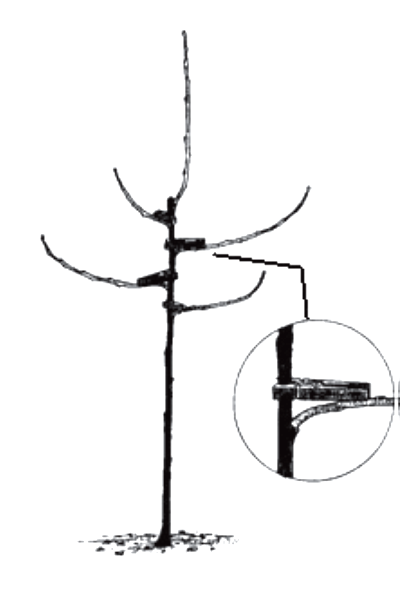
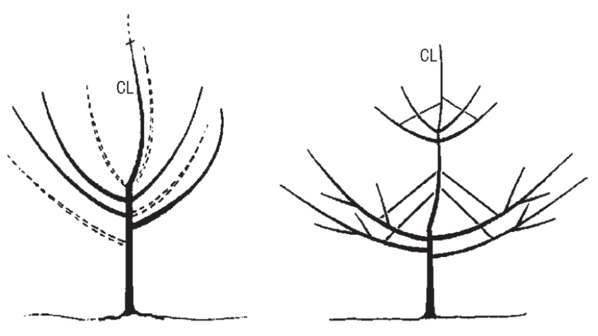
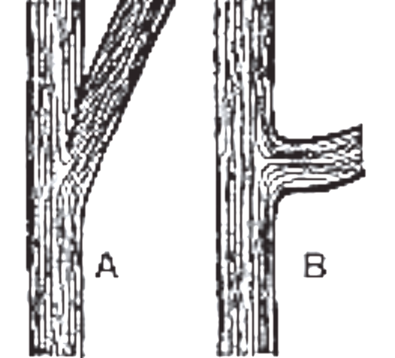
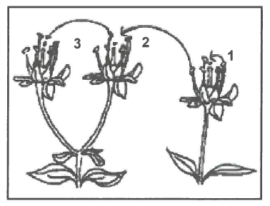

Overview
Apples, pears, tart cherries, and plums can be grown easily in Ohio gardens. Lack of hardiness and late spring frost damage peaches, nectarines, and apricots, making them more challenging to grow.
Apple and pear trees are grafted onto varying rootstocks, which will control the overall size of the tree. This provides size options to meet specific landscape requirements. Dwarf fruit trees are used as borders, small shade trees and specimen plants. They take up less space and are easier to maintain.
Fruit trees can bring not only bloom color but also tie in the latest trend of "edible landscaping." Espalier training of pears and apples makes an especially attractive landscape focal point.
Tree fruits are the most demanding of all the fruits and will require consistent attention to produce satisfactory fruit. Do not expect to achieve grocery store quality fruit without a regular insect and disease control program.
Before planting any type of tree fruit, be sure to take a soil sample and send it to be tested at a qualified soil testing facility. Follow any recommendations made or apply any amendments to the soil, the fall previous to planting any fruit tree. Eliminate any guesswork regarding existing soil nutrients or any lack thereof, and determine the trends of the soil pH to move up, down or remain the same. Always take a soil sample and use the soil test as a guide before applying any lime, sulfur or fertilizers. Soil amendments and fertilizer applications should always be based on the results of a soil test.
Learn more about specific fruit tree types:
- Apple Trees - HYG-1401 Growing Apples in the Home Orchard
- Peaches & Nectarines - HYG-1406 Growing Peaches and Nectarines in the Home Landscape
- Pawpaws - Pawpaw
Ongoing Management
Weed Control & Mulching.
Keep the area under the trees’ canopies free of weeds and grass. This practice reduces competition for nutrients and water. Mulching helps retain an even soil temperature and moisture level.
Insect & Disease Control.
Insect and disease control is important on tree fruits. The first step is to plant trees in a sunny location with good air circulation. Use disease-resistant cultivars. Scab-resistant apples include ‘Dayton,’ ‘Enterprise,’ ‘Gold Rush,’ ‘Jonafree,’ ‘Liberty,’ ‘Redfree,’ ‘MacFree’ and ‘Williams Pride.’ Information on disease susceptibility is available in the Ohio State University Extension Bulletin 758, Apple Rootstocks and Cultivars.
Sanitation helps to reduce the number of fungal disease spores that over-winter to infect trees the following season. Removing and destroying insect infested fruit prevents insect larvae from maturing to produce offspring and more damage.
Insect traps are used to determine when certain pests are present for better timing of control measures. Red balls coated with a sticky material, hung at a rate of one trap per 100 apples, will trap significant numbers of apple maggot adult flies. Mating disruption is another common technique to reduce damage by pests without using traditional pesticides. A one-year-old peach, cherry, apricot or plum tree is pruned with an open center. Protect beneficial insects and mites that help control pest populations. Remember, insecticides should not be used during bloom.
A complete list of insect and disease problems, plus control options, is presented in Ohio State University Extension Bulletin 780, Controlling Diseases and Insects in Home Fruit Plantings.
Common and serious diseases of apples include fire blight and apple scab. Brown rot and black knot are important diseases affecting stone fruit (peaches, nectarines, plums, and sweet and sour cherries). The greater and lesser peach tree borers cause considerable damage to stone fruits, too. Controls are provided in Fact Sheets 2032-09 and 2033-94 (Reference Section).
A spray schedule is necessary in Ohio for a disease- and insect-free crop. Emphasizing early season control between bud break (green tip) to one week after petal fall controls apple scab, apple rust and powdery mildew, as well as scales, some aphids and plant bugs. Early season applications also reduce the potential for late-season damage from pear leaf spot, mites, plum curculio, pear psylla and leaf rollers. Spray schedules for tree fruits are provided in Ohio State University Extension Bulletin 780, Controlling Diseases and Insects in Home Fruit Plantings.
|
|
Fertilization
Always take a soil sample and use the soil test as a guide before applying any lime, sulfur or fertilizers. Soil amendments and fertilizer applications should always be based on the results of a soil test.
|
|
Watering
All newly transplanted fruit trees require water at planting and during dry periods during the first year. However, peach, nectarine and plum trees that are 4 to 12 years old need watering two to three weeks before harvest. Apply 12 to 16 gallons of water evenly under the tree twice a week when rainfall has been less than normal. Apple trees should be watered throughout the growing season if rainfall is insufficient.
|
|
Pruning / Cutting Back
|
 Training Scaffolds |
Proper pruning is essential to tree health, fruit production and disease prevention. After planting a fruit “whip” (e.g., a single, unbranched shoot), the whip should be pruned at the height (24” – 36”) where the gardener wants the first set of scaffold branches to form. Scaffold branches are the long-term branches which will bear most of the weight of the developing fruit. These scaffolds will begin to develop 4” – 6” inches below the cut made on the whip type of fruit tree and typically arises at the nodes.
As soon as the scaffold growth begins, start training these branches with the help of spring-loaded clothespins or weights. When branches are 4” – 6” inches long, clamp clothespins perpendicular to the main trunk, thereby forcing the developing scaffold out away from the trunk (see illustration on left). This forces the young tree to develop strong branch crotch angles to support a heavy fruit load without tearing out or breaking. Remove the clothespins at the end of the first growing season.
After the first year, prune new trees in March, leaving four shortened branches near the top and one strong upright central leader or main trunk. Remove all branches that may have begun to grow below the first set of scaffold limbs.
Remove all limbs with crotch angles of less than 45 degrees. The accompanying illustration shows two fruit trees pruned in years one and two.
|
 | ||||||||||||||||||||||||||||||||||||||||||||||||||||||||||||||||||||||||||||||||||||||||||||||||||||||||||||||||||||||||||||||||||||||||||||||||||||||||||||||||||||||||||||||||||||||||||||||||||||||||||||||||||||||||||||||||||||||||||||||||||||||||||||||||||||||||||||||||||||||||||||||||||||||||||||||||||||||||||||||||||||||||||||||||||||||||||||||||||||||||||||||||||||||||||||||||||||||||||||||||||||||||||||||||||||||||||||||||||||||||||||||||||||||||||||||||||||||||||||||||||||||||||||||||||||||||||||||||||||||||||||||||||||||||||||||||||||||||||||||||||||||||||||||||||||||||||||||||||||||||||||||||||||||||||||||||||||||||||||||||||||||||||||||||||||||||||||||||||||||||||||||||||||||||||||||||||||||||||||||||||||||||||||||||||||||||||||||||||||||||||||||||||||||||||||||||||||||||||||||||||||||||||||||||||||||||||||||||||||||||||||||||||||||||||||||||||||||||||||||||||||||||||||||||||||||||||||||||||||||||||||||||||||||||||||||||||||||||||||||||||||||||||||||||||||||||||||||||||||||
|
First-year pruning – One-year-old apple tree with lateral branches and center leader (CL) |
|
Second-year pruning – Two-year-old apple tree with wooden or metal spreaders. |
| |||||||||||||||||||||||||||||||||||||||||||||||||||||||||||||||||||||||||||||||||||||||||||||||||||||||||||||||||||||||||||||||||||||||||||||||||||||||||||||||||||||||||||||||||||||||||||||||||||||||||||||||||||||||||||||||||||||||||||||||||||||||||||||||||||||||||||||||||||||||||||||||||||||||||||||||||||||||||||||||||||||||||||||||||||||||||||||||||||||||||||||||||||||||||||||||||||||||||||||||||||||||||||||||||||||||||||||||||||||||||||||||||||||||||||||||||||||||||||||||||||||||||||||||||||||||||||||||||||||||||||||||||||||||||||||||||||||||||||||||||||||||||||||||||||||||||||||||||||||||||||||||||||||||||||||||||||||||||||||||||||||||||||||||||||||||||||||||||||||||||||||||||||||||||||||||||||||||||||||||||||||||||||||||||||||||||||||||||||||||||||||||||||||||||||||||||||||||||||||||||||||||||||||||||||||||||||||||||||||||||||||||||||||||||||||||||||||||||||||||||||||||||||||||||||||||||||||||||||||||||||||||||||||||||||||||||||||||||||||||||||||||||||||||||||||||||||||||||||
Pruning in the third season and beyond should result in the lower branches being longer and older than the next higher branches. A central leader should be allowed to develop until the tree has reached the desired height.
When this height is reached, remove vigorous branches from the central leader and retain short lateral branches (8 to 12 inches) that are about one-quarter inch in diameter. Thereafter, remove any shoots that grow upward from the center of the tree. Summer pruning of this type of upright growth will be beneficial.
Look to begin the second set of scaffold limbs approximately 18” – 24” above the uppermost limb of the first set of scaffold limbs. Select the first limb, then ideally step up or move up the tree trunk at least one inch and select the next scaffold limb. This “step up and turn” approach will result in a very strong attachment of each of the scaffold limbs rather than having two or three or all four scaffold limbs attached at the place (node) on the trunk.
|
 A. Weak crotch angle B. Strong crotch angle |
Open center system. The goal is a set of three to four equal-sized branches arising about 18” – 24” above the ground. Again ideally, these scaffolds should be chosen with the “step up and turn” approach to maximize the branch crotch angle attachment which should produce the strongest limbs for bearing the fruit load. Each of these branches should have a crotch angle of 60º to 90º. The central leader is removed, and all new growth and fruit arises from these branches. This system allows for excellent sunlight penetration of the center of the tree.
|
|
Thinning
Fruit set is often too heavy on some trees. If fruit is not thinned, then size, color and quality of the entire fruit crop is reduced. Peaches and certain plums usually have excess fruit. This important cultural practice, called fruit thinning, involves removing the excess fruit by hand, in the month of June, when fruit is three-quarters inch in diameter. To properly size fruit, thin the fruit 4” – 6” for peaches and 2” – 3” for plums.
Thin apples in early June to 6 inches apart when a heavy crop set is evident on the tree. This should be done as soon as possible and no later than 60 days from bloom time. This ensures those tree resources will actually be put into the remaining fruit and forming the return bloom from year to year.
Trees will naturally drop fruit or excess fruit will actually push the other fruit off in a competition for space, but natural drop is not as even as hand-thinning. Some cultivars tend to set a heavy crop every other year. This is a natural cycle for these cultivars.
Getting Started
Selection of Cultivars
| Fruit Rootstock | Bearing Age (yrs) | Space per Tree | Average Yield (lbs) | Useful Life (yrs) |
| Apple | ||||
| Semi-dwarf | ||||
| M.7 | 3-4 | 15' x 15' | 150 | 20 |
| M.106 | 4-5 | 20' x 20' | 200 | 20 |
| Dwarf | ||||
| M.9, M.9/M.106 | 2-3 | 10' x 20' | 75 | 15 |
| M.26, C-6, M.9/M.111 | 3-4 | 12' x 22' | 100 | 15 |
| Cherry | ||||
| Tart | ||||
| Standard | 3-5 | 20' x 25' | 75 | 15 |
| Genetic Dwarf | 2-3 | 15' x 20' | 25 | 10 |
| Sweet | ||||
| Standard | 4-7 | 25' x 30' | 80 | 20 |
| Peach, Nectarine | ||||
| Standard | 3-4 | 20' x 25' | 120 | 12 |
| Pear | ||||
| Standard | 4-5 | 20' x 25' | 120 | 15 |
| Plum | ||||
| Standard | 4-5 | 20' x 25' | 100 | 15 |
The needed space, care, years until bearing fruit, disease resistance, hardiness, local microclimate and gardener's preferences are all important considerations in selecting which fruit to grow. The table presented here gives a variety of information in categories that affect the grower's decision about which trees to grow. The mature size of a fruit tree will be determined by the interaction between the rootstock, possibly an interstem and the type of tree being grafted. If a spur type of apple tree is grafted, then the mature tree will be one-third smaller than is typical, due to the interaction of the tree type and the rootstock. Other trees like the 'Crispin' or 'Mutsu' are more aggressive growers and tend to be one-third larger than typical for a given rootstock.
Rootstock and interstem grafts may influence hardiness, when fruit is produced, and how well a tree is anchored in the soil. Apple rootstocks vary in susceptibility to collar rot and fireblight. Rootstocks are referred to by the rating system shown in the accompanying graduated illustration of tree size. Generally speaking, the more dwarfing the rootstock, the sooner the tree bears fruit. Size ranges include dwarfing trees (8' to 12'), semi-dwarf trees (14' to 25'), and full-size trees (up to 30'). Genetic dwarfs are a more recent horticulture introduction. Although genetic dwarf cherry, peach and nectarine are sized for patio growing, fruit quality doesn't likely equal that of standard varieties.
Each gardener must examine the intended planting site for microclimates. Frost-sensitive peaches and nectarines often lose their crop to late spring frosts. The chart presented here contains information about fruit trees and low temperature hardiness.
Select trees from reputable nurseries that offer high quality stock. Avoid plants offered by friends or neighbors. These plants can harbor diseases.
Do not try to grow trees from seed; they do not produce true-to-type or cultivar.
Recommended cultivars are produced by grafting desired scions onto rootstocks. Choose trees with a trunk diameter of 3/8” to 5/8” for planting.
The tables presented here provide information on fruit-tree cultivars recommended for this area. Note recommendations for those varieties that require two cultivars for pollination.
Approximate Low Winter Temperatures To Damage Dormant Plants and/or Flower Buds
- Apple -30 ºF
- Apricot -25 ºF
- Cherry -20 ºF
- Nectarine -15 ºF
- Peach -15 ºF
- Pear -30 ºF
- Plum -15 ºF
Drastic temperature fluctuations either entering into winter or coming out of winter are the most common reasons for twig, bud or even tree death. These variable and fluctuating conditions often result in the bark splitting and pulling away from the trunk or branches. Apricots, sweet cherry and peach are more susceptible to frost damage to blooms from these oscillating temperatures. Always avoid planting tree fruits in low spots where cold air settles.
Apples | ||
| Cultivar | Season | Uses/Remarks |
| Lodi | Early Summer | Pies |
| Prima | Late Summer | Fresh; Scab-resistant |
| McIntosh | Late Summer | Fresh, sauce, pies, baking; Best for Northern Ohio |
| Jonathan | Early Fall | Fresh, sauce, pies, baking; Good pollinator |
| Liberty | Early Fall | Fresh; Scale resistant |
| Delicious | Fall | Fresh |
| Golden Delicious | Fall | Fresh, sauce, pies, baking |
| Empire | Fall | Fresh, sauce, pies, baking; Stores well |
| Melrose | Late Fall | Fresh, sauce, pies, baking; State apple of Ohio, high quality and productive |
Cherry, Red Tart - Used in pies, jellies, jams, and desserts | ||
| Cultivar | Season | Remarks |
| Standard | ||
| Early Richmond | Early | Productive, but fair quality |
| Montmorency | Mid-season | Best red tart |
| Genetic Dwarf | ||
| Meteor | Mid-season | Hardy; small, but quality fruit |
| North Star | Mid-season | Small fruit, fair quality |
Cherry, Sweet - Used for eating fresh, in salads, and deserts | ||
| Cultivar | Season | Remarks |
| Emperor Francis | July | Trees vigorous and productive |
| Windsor | July | Trees large, productive, and vigorous; firm red fruit |
| Stella | July | Productive and self-pollinating |
Nectarine - Used fresh and in deserts | ||
| Cultivar | Season | Remarks |
| Independence | Early | Cling-type |
| Summer Beauty | Early | |
| Hardired | Mid-season | Productive, small to medium size |
| Mericrest | Mid-season | |
| Red Gold | Late | Freestone, hardy, large |
| Fantasia | Late | |
Peach | ||
| Cultivar | Season | Remarks |
| Harbinger | Very Early | Freestone, hardy |
| Garnet Beauty | Very Early | Semi-reestone, hardy |
| Sun Haven | Very Early | Freestone, hardy |
| Harken | Early | Freestone, hardy |
| Redhaven | Early | Freestone, hardy |
| Reliance | Early | Freestone, very hardy |
| Glohaven | Mid-season | Freestone |
| Harmony | Mid-season | Freestone, hardy |
| Cresthaven | Mid-season | Freestone, hardy |
| Harcrest | Mid-season | Freestone, hardy |
| Madison | Late | Freestone, hardy |
| Redskin | Late | Freestone, hardy |
| Belle of Georgia | Late | Freestone, very hardy |
| White Hale | Late | Freestone, hardy |
Pear | ||
| Cultivar | Season | Remarks |
| Clapp's Favorite | Early | Susceptible to fireblight; fruit large and attractive |
| Duchess | Early | Self-fertile, slight resistance to fireblight |
| Early Seckel | Early | Slow grower; high quality fruit |
| Bartlett | Early to mid-Season | Susceptible to fireblight; high quality |
| Beurre Bosc | Mid-season | Somewhat resistant to fireblight and productive |
Plum | ||
| Cultivar | Season | Remarks |
| Italian Prune | Mid-season | Large, vigorous, productive trees;; fruit fair to good dessert quality |
| Stanley | Mid-season | Trees vigorous and fairlyhardy; self-fruitful and good pollinator |
| Reine Claude (Green Gauge) | Mid-season | Trees productive; fruit greenish-yellow, medim size, and high quality |
| Bluefree | Late mid-season | Trees productive; split pits |
|
|
Pollination Needs
|
 1. Self-pollination 2. Pollen from different flower on the same plant 3. Cross-pollination |
Here are the rules that apply to the fruit trees’ various pollinator needs:
- Apples, pears, sweet cherries and plums require another cultivar within 100 feet for good fruit production. They are usually self-sterile.
- Apricots, nectarines, peaches and sour cherries do not require another cultivar for good fruit production. They are typically self-fertile.
- Before purchasing, learn if the selected fruit trees are self-fertile or self-sterile. Many home fruit production questions arise because fruit trees do not produce as expected. Most of these problems develop from poor pollination.
- Self-sterile trees require another cultivar of the same tree fruit that blooms at the same time. The pollinating tree should be within 100 feet of the desirable fruit tree.
- Bees are the primary insects for transporting pollen, so every effort should be made to not use insecticides during bloom that could potentially harm them.
- Trees grafted with multiple cultivars, like “5-in-1 Apple” are often marketed. These novelties may or may not include appropriate cultivars for cross-pollination for fruit to set and mature.
More Information
Books and Papers
- Controlling Diseases and Insects in Home Fruit Plantings, by The Ohio State University Extension
Web Sites
- Apple Scab
- Fire Blight of Apples and Pears, The Ohio State University
- HYG-1401 Growing Apples in the Home Orchard, The Ohio State University
- HYG-1406 Growing Peaches and Nectarines in the Home Landscape, The Ohio State University
- Pawpaw, University of Kentucky
- Peach Canker, The Ohio State University
- Peach Leaf Curl, The Ohio State University
- Phytophthora Root and Crown Rot of Fruit Trees, The Ohio State University
- Scab of Peach, Nectarine, Plum, & Apricot, The Ohio State University